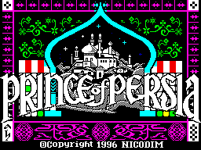
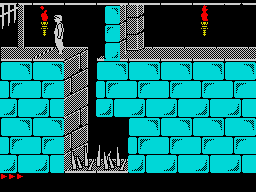
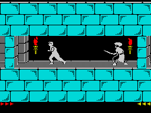
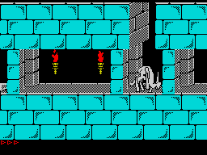

|

|
Jafar, eh? Why would anyone
name part of their ruling body after a biscuit? Maybe that explains the
sorry state of affairs afflicting Persia at the start of the game, for
the Jafar in question has seized power. This might not be so bad (after
all, everyone would have a giggle whenever they addressed him) but he's
imprisoned the princess and given her an ultimatum: marry him or die in
an hour. To make things that little bit more interesting, the hero - that's
you – has been thrown into the dungeons. You need to get to the princess
and dispose of the evil Jafar inside of the hour she has remaining to save
the kingdom… sound simple? |
| Well, that much is for,
ladies and gents, Prince of Persia - arcade/platform/puzzle classic of
everything from the PC to the Master System and the 16-bit consoles in
between - has made it to the Speccy. And thanks to some truly amazing programming
by Russian software house Nicodim, it's as perfect a conversion as you
could hope for on Speccy disk. In Russian. But don't fret: Prince of Persia
(or POP as we lovingly refer to it) is about as big on text as an Ocean
platformer, so you'll be able to review the few lines given with a cocked
eyebrow before settling down to some action proper and play the same game
that buckled its swash into the hearts of gamers everywhere about six years
ago. Now, this is a bit of a two-edged sword as POP was not perfect when
it came out, and the Speccy version has all the joys and quirks of the
original. |

|
|

|
You spend your time running
around a number of dungeons and what look like the palace basement, trying
to find the floor switch which will open the exit door – which also needs
finding – in order to get to the next level. All this needs to be done
with haste as the hour the princess has is a literal hour in real-time
as well as game-time, giving you 60 minutes to finish the whole thing.
In order to progress through the dungeons you need to jump gaps, navigate
floor spike, iron choppers and loose floor tiles, as well as dispatching
Jafar's goons with your trusty blade recovered in the first level. Fortunately
the dungeon architect was a particularly kind fellow who left potions scattered
around which give you health back and some of which even increase your
total hit points. |
| The controls are pretty
intuitive and soon(ish) you'll find yourself leaping about, grabbing onto
platforms, hauling yourself up and down levels, matching blades with guards
and generally having a good time. It feels like being Errol Flynn or someone
similar in one of those 50s movies and the sheer degree of control you
have makes the game world feel much more alive. It also helps displace
the repetitive nature of the levels and the fact that you are basically
doing the same thing over and over again. |

|

|
However, it's not all rosy
in the land of Persia's dungeons. To start with, although your character
is very able, he's not particularly controllable and you'll soon want to
hurt him after he falls down the same gap for the umpteenth time because
he takes time to think about jumping after you press the button and a while
to stop when you let go of the button. As a consequence, dying comes often
and easily and the lack of any restart points on levels means you will
quickly resort to saving every 30 seconds on an emulated copy, or crying
if you're playing the original. |

|
The dungeons themselves
get pretty repetitive after a few levels; they're all you get, and let's
face it, doing an entire game in dungeons and keep it interesting is a
tricky thing to pull off at the best of times. To be fair, there can't
have been much memory left for varied backgrounds after the beautifully-animated
main sprite and his enemies, but the repetitive locations is a problem
which also plagued every other version. As it is, here's the formula for
you to make your own POP level: just randomly arrange the following and
sprinkle them throughout two or three types of level: a)dodge spikes b)dodge
crushers c)defeat guards d)leap gaps e)navigate falling floors, f)hit switches
to open doors before they close again and g) die lots. This formula is
repeated, repeated and repeated some more until you finally finish the
game, probably with a lot less hair than when you started. Yes, you will
eventually finish it, because no one level is that difficult and you get
passcodes for each level which give you a fairly generous pre-determined
proportion of the time limit regardless of how you were doing when you
reached the level. |
| In the end, the question
is whether you have the patience and tooth-gritting determination to see
it through to the end. Personally, there came a point when my character
fell off a three-storey level for (what felt like) the hundredth time that
level (not counting all the levels before) because of his thinking time
between button-pressing and reacting and I left him in a bloody mess on
the floor. |

|